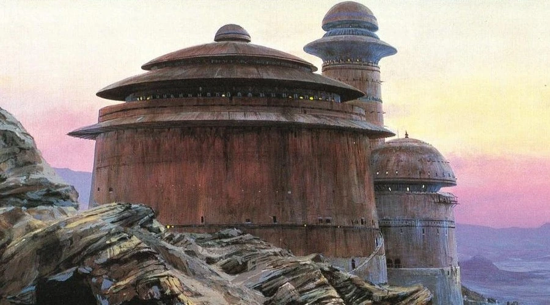

Luke arrives at Jabba's Palace with one goal: rescue Han Solo. His friends have already tried to free Han, but their plan has failed and they are now prisoners of Jabba the Hutt.
Luke enters the palace and demands that Jabba release his friends. Jabba refuses and drops Luke into a pit beneath the palace, where he is forced to fight the Rancor.
Luke survives, but Jabba sentences Luke, Han, and Chewbacca to death. With the help of his friends, Luke escapes and defeats Jabba's forces. Han is finally free.
The rescue is over, but Luke knows his training is not complete. Before he can continue with the Rebellion, he must return to Yoda.